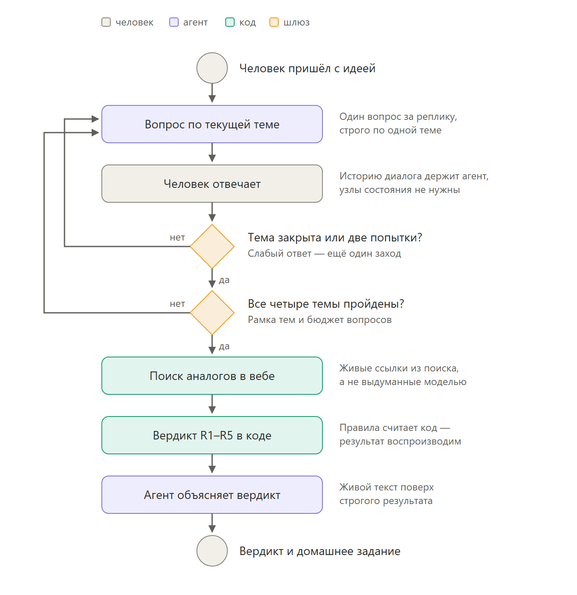

Ассистент за шесть–восемь вопросов выясняет, стоят ли за идеей факты. В конце он возвращает вердикт, посчитанный по детерминированным правилам, и домашнее задание, собранное под конкретные пробелы этого человека.
Ассистент ничего не советует, не предлагает готовых решений и не улучшает формулировки за человека. Он только задаёт вопросы и оценивает ответы.
Ассистент спрашивает о том, что человек видел сам, что делал, с кем разговаривал и сколько времени и денег это заняло.
Решение считается по пяти правилам одинаково для всех, и его можно перепроверить по логу разговора.
Ассистент не называет аудиторию, рынки, технологии и способы проверки, потому что всё это должен принести сам человек.
Ассистент отдаёт эксперту либо заявку, готовую к разбору, либо человека с конкретным домашним заданием.
Мы выясняем, кто именно сталкивается с проблемой. Ответы вроде «все» или «бизнес» сегментом не считаются, потому что по ним непонятно, где искать этих людей.
Мы выясняем, что эти люди делают сегодня, до появления его решения. Здесь важны наблюдаемые действия, а не пожелания.
Мы выясняем, чем люди уже закрывают проблему и во что это им обходится в деньгах и времени.
Мы выясняем, как человек собирается дёшево проверить спрос и какой результат он заранее считает провалом.
Порядок тем жёсткий и выбран не случайно: пока не назван сегмент, бессмысленно спрашивать про поведение, а пока не описано поведение, рано спрашивать про альтернативы.
Стив Бланк требует проверять гипотезы о клиенте в поле, а не в кабинете. Пока не назван сегмент, выходить в поле некуда, поэтому эта тема стоит первой.
Роб Фицпатрик учит спрашивать о конкретных случаях в прошлом, а не о мнениях и намерениях. Отсюда правило «вопросы про прошлое сильнее вопросов про будущее» и все запреты на подсказки.
Люди уже чем-то закрывают свою задачу: сервисом, костылём или ручным способом. Мы ищем то, что «нанято» сегодня, и цену этого решения в деньгах и времени.
Эрик Рис и Эш Маурья требуют дешёвого эксперимента с заранее названным критерием провала. Без критерия эксперимент нельзя провалить, а значит он ничего не проверяет.
Mom Test здесь не украшение, а рабочее ограничение. Например, тема «Почему сейчас» была убрана именно из-за него: на ранней идее она почти всегда вытягивала философию про тренды вроде «ИИ развивается». Её заменили на «Альтернативы» — тот же смысл, но проверяемый.
Темы и их рубрики лежат в одном файле конфигурации. Добавить пятую тему или ужесточить критерий двойки — это правка этого файла, а не переработка ассистента.
Чем строже описан критерий двойки, тем строже фильтр. Это единственная ручка, которой настраивается жёсткость отбора, и она понятна человеку без программиста.
Куда рамку можно расширять дальше: экономика юнита, доступ к каналу продаж, регуляторные ограничения, состав команды. Мы сознательно начали с четырёх тем, потому что именно они отсекают идеи, которые никто не проверял на живых людях, а остальное имеет смысл спрашивать уже после этого.
Двойка ставится тогда, когда сказанное можно проверить: названа группа внутри категории, приведено число, описан конкретный обходной путь или назван срок вместе с критерием провала.
Единицу получает ответ, который звучит разумно, но который можно без изменений приклеить к любой другой идее.
Ноль означает, что темы не касались или что ответа по сути так и не прозвучало.
Если ответ звучит разумно, это ещё не двойка. Дальше проходит только тот, у кого все четыре темы закрыты на двойку.
Вместо подсказки ассистент спрашивает, откуда человек знает про проблему: работал ли он сам в этой сфере или уже разговаривал с людьми оттуда.

Агент помнит диалог целиком, оценивает ответы по рубрике и сам решает, когда тема закрыта. Формулировки не заготовлены заранее: каждый вопрос рождается из контекста конкретного разговора.
Пять правил R1–R5 работают как обычный детерминированный код. Модель приносит оценки по темам, но само решение считает код.
Модель говорит, а код решает.
Одинаковые оценки на входе всегда дают одинаковый вердикт, и любое решение можно перепроверить по логу.
Агент держит весь разговор в контексте, поэтому отдельные узлы для хранения состояния ему не нужны.
Инструмент ищет работающие аналоги и возвращает реальные ссылки из поисковой выдачи, а не названия, придуманные моделью.
Инструмент считает вердикт по правилам R1–R5 и вызывается ровно один раз, в самом конце интервью.
Эксперт получает не только оценку идеи, но и картину конкурентов вместе со ссылками на них.
Категорию ассистент не засчитал и зашёл на ту же тему второй раз. При этом он не подсказал ни одного признака: не назвал ни отрасль, ни размер компании, ни регион.
Вердикт здесь посчитан кодом, а ассистент только пересказал результат человеческим языком.
Человек узнаёт, проходит он дальше, должен доработать идею или получил отказ как нетехнологический бизнес. Рядом указано правило, по которому принято решение.
Одной фразой ассистент говорит, что именно осталось словами, а не фактами.
Человек видит, сколько работающих аналогов нашлось, и получает ссылки на них.
Задание собрано под непройденные темы и состоит из конкретных шагов, а не из совета подумать ещё.
Даже отказ уходит вместе с планом действий, поэтому фильтр работает как воронка возврата: человек приходит второй раз уже с фактами.
Замеренное интервью из шести ходов израсходовало 33 965 входящих токенов по тарифу 0,3 ₽ за тысячу.
На ответы модели ушло 2 232 исходящих токена по тарифу 0,5 ₽ за тысячу.
Веб-поиск тарифицируется отдельно от токенов: 915 ₽ за тысячу вызовов, а мы вызываем его один раз за интервью.
Если человек отвечает плохо, интервью упрётся в бюджет из десяти вопросов, и дороже этой суммы заявка стать не может.
Тысяча заявок обойдётся примерно в 12 000 ₽ на модели DeepSeek V4 Flash. Это верхняя оценка: часть токенов система кеширует автоматически и тарифицирует вчетверо дешевле, поэтому реальный счёт окажется ниже.
Бюджет в десять вопросов и лимит в две попытки на тему жёстко ограничивают длину интервью. Поэтому стоимость заявки известна заранее, а не выясняется постфактум по счёту.
Обычный ход стоит 2 600–3 000 входящих токенов и прибавляет около 90 токенов за ход, потому что растёт переписка. Финальный ход с вызовом инструментов стоил 20 000 токенов, то есть примерно в семь раз дороже обычного.
Вердикт по правилам R1–R5 не стоит ни токенов, ни рублей.
Он считается кодом. Всё, что вынесено из модели в код, перестаёт быть статьёй расхода и одновременно перестаёт быть источником разброса оценок.
Ассистент не заменяет эксперта. Он забирает первые десять вопросов и отдаёт обратно либо факты, либо человека с домашним заданием.